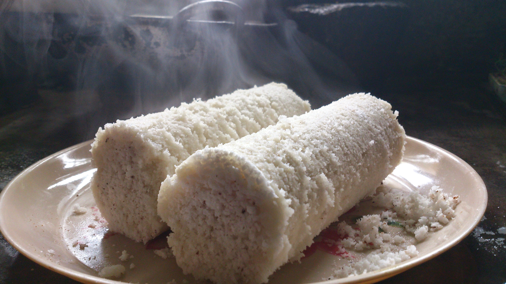

Puttu

Ingredients
- Rice flour roased
- Coconut
- Water, Salt
- Puttu kudam
How to make puttu recipe
- Take 1 cup puttu flour in a mixing bowl or a pan.
- Add ⅓ teaspoon salt or as required.
- Mix very well
- Now sprinkle ⅓ cup water all over. The amount of water required will depend on the quality of rice flour. So you can add accordingly.
- Begin to mix the rice flour with the water with your fingertips.
- Mix very well
- To get soft puttu, the amount of rice flour to water ratio is important. To check this gently press a small portion of the flour between your palms. It should form a lump. When you press this flour lump more, then it breaks and crumbles. This should be the texture of the flour.
- Break all the tiny lumps in the flour with your fingertips. You can even grind this rice flour mixture in a grinder to break lumps. But grind in small batches and use the pulse option of mixer-grinder.
- Now pour 2 to 3 cups water in the base vessel of the puttu kudam. Keep on stove top and let it get heated.
- Meanwhile first place the perforated disc inside the cylindrical vessel. Then add 2 to 3 tablespoons fresh coconut in the cylindrical vessel of the puttu kudam and spread evenly.
- Then gently add the puttu flour till it reaches half of the cylindrical vessel.
- Then again layer with 2 to 3 tablespoons of grated coconut and spread evenly.
- Cover the top portion with 2 to 3 tablespoons of grated coconut and spread evenly. Cover the top with the lid.
- Place the cylindrical portion on top of the base vessel in which the water must have come to a boil.
- Steam puttu on medium flame till you see steam releasing from the top vent of the cylindrical vessel. Then switch off the flame. It took me about 9 minutes as I have used a large puttu maker. If using a medium sized puttu maker or regular puttu maker, the time will be about 5 to 6 minutes.
- Once cooled, using a wooden skewer or the stick that accompanied the puttu kudam, remove the steamed puttu.
- Server hot puttu with kadala curry or veg stew or potato stew. It will also go well with South Indian chana masala. Also serve some bananas and pappadums by side.
Back to home